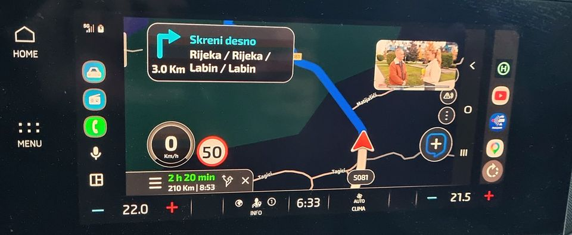
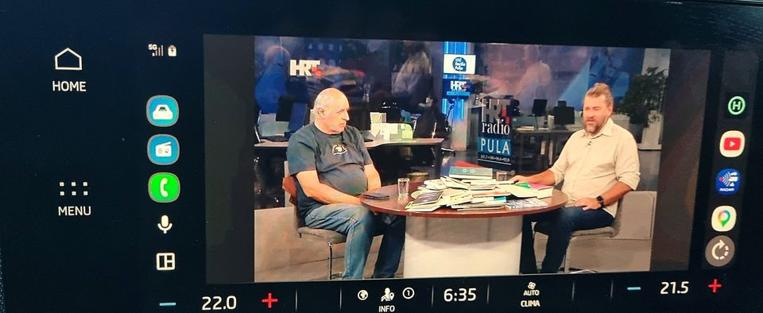

The short answer
There is no official way to watch YouTube video on Android Auto while the car is moving. The only two real routes are:
- The sideline apps (AAAD, Fermata Auto, CarStream) — one-tap installs that bundle a small browser/video player into Android Auto.
- Screen mirroring — project your entire phone screen onto the car display and drive it however you like. This is the most flexible, because it isn't limited to YouTube: Netflix, a browser, a game, anything on your phone shows up.
Every route except the official one is a sideload, and Android Auto will only list a sideloaded app if it was installed by something that looks like a store (KingInstaller). That single step trips most people up.
Every method, compared
| Method | Plays YouTube video? | Keeps Google Maps in the nav slot? | Works while parked / as passenger | Install effort |
|---|---|---|---|---|
| Official YouTube / YouTube Music in Android Auto | No — audio only | Yes | Yes (audio) | None |
| AAAD / AAStore + Fermata Auto or CarStream | Yes | Usually not | Yes | One tap (via AAAD) |
| Screen2Auto | Yes (mirrors screen) | Usually not | Yes | Medium |
| MyCar (screen mirror) | Yes — any app | Yes — registers as weather by default | Yes | Sideload with KingInstaller |
| Wireless Android Auto "AI box" (CarlinKit and similar) | Yes | Yes | Yes | Plug in |
"Keeps the nav slot" matters if you want Google Maps or Waze to keep routing while the video is on screen. Most video tools replace the navigation app; a mirror can be shown beside it.
MyCar: mirror any app, keep your navigation slot
MyCar is a free, open-source screen mirror for Android Auto. Instead of shipping a video player, it shows your actual phone screen on the car display and forwards taps, scrolls and pinches back to the phone — so you open the real YouTube app, the real Netflix, or anything else.
What makes it different from the other mirrors and video apps:
- It keeps your navigation slot by default. MyCar registers as a weather app, so Google Maps or Waze keep navigating while the mirror is on screen. (Prefer Android Auto to auto-open MyCar? Switch it to the navigation category in the app.)
- Any app, not just YouTube. Because it mirrors the whole screen, there is no per-app support list to wait for.
- Open source, MIT licensed, no ads, no account. The APK is built from the tagged source and published on GitHub Releases.
- It updates itself. Installed builds poll a version endpoint and offer the newer APK in-app.




Not affiliated with Google or YouTube. MyCar deliberately does things Google Play does not allow, so it can never be published there — it is sideload-only. Use it as a passenger or while parked, and follow the laws where you drive.
Step-by-step: install MyCar and get YouTube on the car screen
-
Install KingInstaller on the phone
Android Auto only lists apps that came from a trusted store, so a normal sideload never shows up. KingInstaller makes Android treat the APK as if it came from the Play Store. Install it first.
-
Download MyCar, then allow KingInstaller to install it
Download the latest
MyCar-<version>.apkfrom the Releases page, open KingInstaller, pick that file under Select APK to install, and confirm. The first time, Android interrupts you with Install unknown apps → Allow from this source: turn it on for KingInstaller and come back. Skipping this is the usual reason the install appears to do nothing.Why KingInstaller at all: Android Auto only lists an app when its installer looks like a trusted store. KingInstaller records the APK as installed by the Play Store, which is what makes MyCar visible — a plain sideload is not. If you have a computer and USB debugging, the same result is one command, no extra app:
adb install -i com.android.vending MyCar-<version>.apk(check withadb shell dumpsys package com.example.mycar | grep installerPackageName→com.android.vending). -
Unlock Android Auto developer mode
On the phone: Android Auto settings → scroll to Version → tap it about 10 times. A prompt will confirm developer mode is on.
-
Allow unknown sources
In Android Auto's overflow menu open Developer settings and turn on Unknown sources ("Allow apps from unknown sources"). Without this, sideloaded apps stay hidden.
-
Grant the phone-side permissions once
Open MyCar on the phone. With Start automatically when Android Auto connects on (the default) it will ask for Display over other apps and ask you to enable the MyCar accessibility service. Both are needed for a truly hands-free start (the accessibility service is also what lets the car touchscreen drive the phone). Sideloaded apps must allow restricted settings first: Settings → Apps → MyCar → ⋮ → Allow restricted settings.
-
Open MyCar in the car
Connect to Android Auto and open MyCar from the weather section (default) or from the navigation launcher if you switched the category. If it isn't listed, reconnect the head unit.
-
Open YouTube and play
Tap YouTube in the quick-launch strip (or open it on the phone) and tap play. The video lands on the car screen. Rotate to landscape from the strip for full screen.
Optional: remove the last tap (one-time ADB command)
Android requires you to approve screen capture once per session. To make MyCar grant it silently, run this once with the phone connected via USB debugging:
adb shell cmd appops set --user 0 com.example.mycar PROJECT_MEDIA allowWithout it, the accessibility service still answers the prompt automatically.
Troubleshooting & FAQ
The install did nothing at all
That is almost always the first-install permission prompt you dismissed: Android asks Install unknown apps → Allow from this source and silently drops the install if it is not granted. Open Settings → Apps → Special app access → Install unknown apps → KingInstaller, allow it, then pick the APK again.
The car screen is black
Either capture isn't running (check the MyCar foreground notification and re-approve capture),
the phone is locked, or the app on screen uses FLAG_SECURE. Banking apps, DRM
video and some password fields are forced black by Android — that is the system, not a bug.
YouTube itself mirrors fine; some paid streaming apps force a black frame.
MyCar doesn't appear in Android Auto
Unknown sources is off, the APK wasn't installed by KingInstaller, or the head unit was connected before MyCar was installed — reconnect it. Also confirm developer mode is still on.
Does it work with wireless Android Auto?
Yes, mirroring works over both USB and wireless Android Auto. The phone and the head unit just need to be connected.
Do I need root?
No. MyCar uses the standard Android MediaProjection screen capture and the Android Auto map surface. Neither needs root.
Why does it need an accessibility service?
For two things: pressing "Share/Start" on the system capture prompt so start is hands-free, and injecting your car-screen taps back into the phone. The service only ever looks at SystemUI's projection window.
Is this legal / will it get me in trouble?
Playing video on a screen visible to the driver while moving is illegal in many countries and is a bad idea regardless. Treat this as passenger or parked entertainment. You are responsible for how you use it.
Get MyCar
Download the latest APK Source on GitHub
Latest stable: 1.43 · MIT licensed · Requires Android 9 (API 28) or newer.
MyCar is free and open source. If it's useful to you, you can support its development: